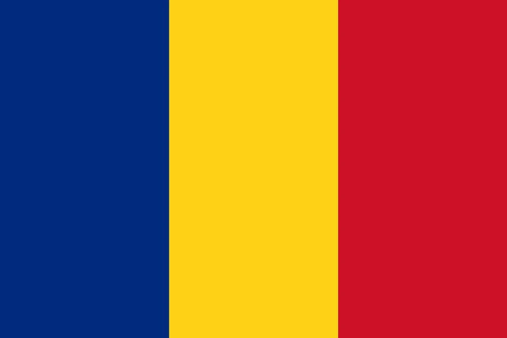

1. Baggio’s Penalty Heartbreak: A Final Defined by Fate
July 17, 1994, at the Rose Bowl in Pasadena—94,194 fans, drenched in California heat, packed into the stadium to witness a World Cup final that promised glory, drama, and history. Brazil, chasing their fourth World Cup title, faced Italy, the Azzurri hoping to add a fifth star after a 12-year drought. What followed was an agonizing 120 minutes of football that had everything except a goal—an intense, tactical battle, where both teams dug deep but failed to find the back of the net. But when it all came down to the penalty shootout, it was a cruel twist of fate that decided the final.
From the very first whistle, both teams gave everything they had. Brazil's attacking duo of Romário and Bebeto probed relentlessly, testing Italy’s defense led by the rock-solid Paolo Maldini and Franco Baresi. Meanwhile, Italy’s talisman Roberto Baggio, nursing a troublesome knee, led their attack, with Daniele Massaro also pushing for a breakthrough. Goalkeepers Gianluca Pagliuca and Cláudio Taffarel stood resolute, making key saves and ensuring that the match went into extra time, still scoreless. In the added 30 minutes, Cafu made some dynamic runs, and Baresi's leadership at the back continued to repel Brazilian advances.
When the whistle blew at the end of extra time, 0-0 was the final scoreline. For the first time in World Cup history, the final would be decided by penalties.
The shootout began with a wave of anxiety that swept across both teams. Baresi, Italy’s captain, stepped up first—and in a moment of heartbreak, his shot sailed high over Taffarel’s bar. Italy’s captain crumbled under the pressure, a sign of the tense environment that was about to unfold. Brazil’s Márcio Santos followed, but Pagliuca was there to save it, and suddenly the pressure was on both sides.
Italy's Alberico Evani and Brazil's Branco each converted their penalties, making it 1-1. Romário, cool as ever, stepped up next and slotted his penalty home, putting Brazil ahead 2-1. Demetrio Albertini followed suit for Italy, keeping the score tied at 2-2. Dunga, the heart and soul of Brazil’s midfield, confidently made it 3-2.
And then it came—the moment that would haunt Italy’s Golden Boy forever. Roberto Baggio, the player who had scored five goals in the tournament and been named the Golden Ball winner, walked up to take Italy’s final penalty. With the weight of an entire nation on his shoulders, Baggio struck—but instead of a goal, the ball soared high over the bar. The stadium fell silent for a beat before Brazil’s players erupted in celebration. The shootout had ended 3-2, Brazil had claimed their fourth World Cup title, and Italy’s dreams had been shattered in the most agonizing way possible.
The Rose Bowl trembled with the roar of Brazil’s fans, dressed in yellow and celebrating their national team’s victory. Dunga, ever the warrior, grinned and said, “This is for Brazil, every one of us.” Head coach Carlos Alberto Parreira, who had led Brazil to glory, beamed, “They fought with heart.” Meanwhile, Italy’s coach, Arrigo Sacchi, was left to reflect on what might have been. “He was hurt, but it’s no excuse,” Sacchi said, acknowledging that despite Baggio’s injury, his miss would define Italy’s World Cup.
The replays of the final were a painful reminder of the heartbreak: Baresi’s early miss, Baggio’s skyward shot, and Taffarel’s outstretched leap to celebrate Brazil’s victory. Pelé, watching from afar, summed it up best when he called Brazil’s triumph “destiny.” Italy had been so close to glory, but in the end, it was Brazil’s resilience and composure that saw them through. Baggio’s five goals couldn’t erase the pain of that penalty miss, which became the enduring image of Italy’s World Cup heartbreak.
In the aftermath, a solemn Baggio took the weight of the final on his shoulders. “It’s on me,” he said, voice heavy with regret. Italy’s Paolo Maldini, ever the defender, sighed, “Too much.” Meanwhile, Brazil danced in Pasadena, the city lit by their victory. “Football’s cruel,” Baggio added, encapsulating the agony of the moment, while Parreira chuckled, “Perfect ending, mate.”
The final tally showed Brazil’s nine shots to Italy’s eight, with the Brazilians registering seven on target. Brazil had edged the possession battle too, with 53% of the ball. But ultimately, it was the shootout that decided the game, and the world had witnessed a truly cruel twist of fate. Baggio’s miss will forever be etched in World Cup history as one of the most heart-wrenching moments in football. For Italy, it was a tournament full of promise that ended in tears. For Brazil, it was a fourth World Cup title—and the first time the final had been decided by penalties.
Italy’s five wins and two draws couldn’t mask the emotional devastation of their shootout loss. Brazil’s glory shone brightly as they lifted the trophy, a testament to their grit, determination, and unwavering belief. And in the midst of it all, the image of Roberto Baggio, head in hands, would linger as the enduring symbol of that heartbreak.

2. Romário’s Championship Fire: The Spark That Led Brazil to Glory
The Rose Bowl final on July 17, 1994, would forever be Romário’s moment—a stage for Brazil’s diminutive striker, “O Baixinho,” to solidify his legacy as one of the world’s finest forwards. With 94,194 fans watching, all eyes were on the man who had electrified Brazil’s attack throughout the tournament. The game, however, was anything but straightforward. It was a battle of nerves, a tactical war where both teams failed to score through 120 minutes of intense football. But when the penalty shootout arrived, it was Romário who provided the calm and composure Brazil needed to claim their fourth World Cup title.
The match unfolded with tension mounting in every minute. Romário, 28, was at the heart of Brazil’s attack. His darting runs, close control, and link-up play with Bebeto constantly tested Italy’s defense. Mauro Silva delivered through balls to him, Cafu overlapped down the right, but Italy’s defense, led by Paolo Maldini and Franco Baresi, held firm. Meanwhile, Italy wasn’t without its chances. Roberto Baggio, despite a knee injury, and Daniele Massaro both tested Brazilian goalkeeper Taffarel, but Brazil’s defense stood tall. The game trudged through extra time, the scoreline still 0-0, and the match would be decided by penalties.
In the shootout, every player knew the stakes. Italy’s captain, Baresi, missed first, skying his penalty over the bar, and the pressure was palpable. Brazil’s Márcio Santos faltered, allowing Italy to level the score. But Romário, as cool as ever, stepped up and sent Italy’s goalkeeper, Gianluca Pagliuca, the wrong way. His calm finish put Brazil ahead 2-1. From there, Demetrio Albertini’s penalty made it 2-2, before Dunga stepped up to make it 3-2. Then came the defining moment. Baggio, Italy’s Golden Boy, was tasked with keeping Italy in the game, but he missed—sending the ball soaring over the bar. Brazil had won 3-2, and the Rose Bowl erupted in celebration.
Romário’s performance throughout the tournament had been nothing short of exceptional. In the group stages, he netted crucial goals against Russia (2-0), Cameroon (3-0), and Sweden (1-1). His goal in the quarterfinals against the Netherlands (3-2) and his decisive header in the semifinal against Sweden (1-0) helped Brazil reach the final. With five goals in total and his calm penalty, Romário’s influence was undeniable. Brazil’s 11 goals in the tournament owed much to his skill and his ability to rise to the occasion.
The celebrations in Pasadena were wild as Romário beamed, his shirt off and his face full of pride. “For the people, every one of ‘em,” he said after the victory. Bebeto, his strike partner, couldn’t help but laugh, “He’s our flame, pure and simple.” In those moments, Romário’s impact was clear—he was the spark that carried Brazil to their fourth World Cup victory.
As Brazil’s victory song echoed through the streets of Rio, the players and fans celebrated the triumph. “Romário’s the king,” Dunga said, while Pelé, watching from afar, grinned, “He’s me out there.” In that moment, Romário had cemented his place as one of the all-time greats, guiding Brazil to a victory that would be remembered for decades to come.
For Romário, this victory wasn’t just about the title. It was about proving his worth, showing the world that his talent, his fire, and his hunger could carry Brazil to glory. The legacy of Brazil’s 1994 World Cup champions would forever be intertwined with his name, and in that final moment, with his decisive penalty, Romário had solidified his place in football history.

3. Hagi’s Romanian Flair: A World Cup Upset for the Ages
On June 26, 1994, the Rose Bowl in Pasadena bore witness to one of the most thrilling upsets in World Cup history. 93,869 fans packed the stadium, the heat simmering in the California air as Romania took on Argentina in the round of 16. Argentina’s legendary Diego Maradona was notably absent from the pitch, banned after a drug test left the South American side without their talismanic figure. Meanwhile, Romania’s own maestro, Gheorghe Hagi, known as the “Maradona of the Carpathians,” rose to the occasion, stealing the spotlight in the most dramatic fashion.
The match exploded into life just 13 minutes in. Hagi, with his trademark flair and vision, delivered a perfectly weighted free-kick to Ion Vlădoiu, who expertly headed the ball past Argentine goalkeeper Sergio Goycochea to put Romania ahead 1-0. Argentina quickly responded—just five minutes later, Gabriel Batistuta was awarded a penalty after a foul in the box. The Argentine forward coolly slotted it home, making it 1-1. However, Romania wasn’t done. In the 22nd minute, Hagi weaved through the Argentine defense, threading a delightful pass to Florin Răducioiu, who latched onto it and finished with precision to restore Romania’s lead, 2-1.
As the second half kicked off, Hagi continued to orchestrate Romania’s attacks, proving that he wasn’t just a playmaker but a true World Cup star. In the 56th minute, Hagi found himself in space once again, lashing a thunderous shot into the back of the net to give Romania a 3-1 lead. The crowd roared, sensing that Romania was on the brink of an unforgettable victory. But Argentina wasn’t finished. Abel Balbo managed to pull one back for his team in the 67th minute, reducing the deficit to 3-2. The final 20 minutes were an agonizingly tense battle, with Argentina pushing forward, desperately searching for an equalizer. However, Romania’s defense held firm, and goalkeeper Bogdan Stelea made several crucial saves to preserve the lead.
When the final whistle blew, Romania had completed one of the greatest upsets in World Cup history, knocking Argentina out of the tournament with a stunning 3-2 victory. The Rose Bowl buzzed with excitement, as Hagi stood tall as the star of the match. “This is for Romania, all of us,” he said with a smile, sweat dripping down his face. His performance was a masterclass in technique and vision, as he delivered two assists and a goal, helping to secure Romania’s best-ever World Cup finish.
Romania’s journey in the 1994 World Cup had been nothing short of magical. In the group stage, they had defeated Colombia 3-1, with Răducioiu scoring a brace and Hagi adding a goal. They narrowly defeated the United States 1-0, with a solitary goal from Ian Durie. Their final group match saw them crush Switzerland 4-1, with Hagi scoring once again. In the quarterfinals, Romania’s incredible run came to an end in a dramatic penalty shootout loss to Sweden, but their exploits in the knockout stages, including this stunning win over Argentina, made them the story of the tournament.
Argentina had dominated possession, controlling 55% of the ball, and they had 12 shots compared to Romania’s eight. But Romania’s precision and flair—embodied by the dazzling Hagi—made all the difference. Argentina, despite having more possession and more chances, simply couldn’t break down Romania’s defense, led by Stelea’s heroics.
In the aftermath of the match, Romania’s coach Anghel Iordănescu could barely contain his pride. “He’s our soul out there,” he said, referring to Hagi, whose creativity and leadership had guided them to this historic victory. The replays of Hagi’s free-kick, Răducioiu’s composed finish, and Hagi’s stunning long-range strike were played on loop. Even Argentina’s players couldn’t help but acknowledge Hagi’s brilliance. “He’s everywhere,” said Gabriel Batistuta, while Răducioiu, ever the joker, laughed and added, “Hagi’s the king, isn’t he?”
Pelé, watching from the sidelines, offered high praise for the Romanian star, calling him “magic.” For Romania, this was a moment of glory that would be forever etched in their footballing history. For Argentina, it was a shocking and painful defeat, a wake-up call that their World Cup dreams were over far earlier than expected.
Romania’s triumph was a reminder that football is often full of surprises, with underdogs sometimes prevailing over the giants of the sport. Despite their eventual loss to Sweden in the quarterfinals, Romania’s run in USA ’94 was a shining example of skill, heart, and the power of a single player—Hagi—who carried his nation on his back and made football fans around the world take notice.
The streets of Bucharest were alive with celebrations as the Romanian team’s stunning victory over Argentina became the talk of the tournament. Hagi had written his name into World Cup folklore, delivering a performance that would inspire future generations of Romanian footballers.
And while Romania’s journey was ultimately cut short, their stunning upset over Argentina in Pasadena would forever be remembered as one of the great moments in World Cup history—a moment where flair, heart, and Hagi’s genius shone brightest.
4. Maradona’s Drug-Fueled Fall: The End of an Era
June 25, 1994, at Foxboro Stadium in Boston, was supposed to be Diego Maradona’s triumphant return to the World Cup stage. The Argentine legend, back after serving a ban for a previous doping violation, was ready to guide his country to another title. It was a story of redemption for Maradona, one of football’s most iconic figures, who had been ousted from the 1994 tournament following a positive drug test. But fate had other plans, and Maradona’s World Cup swan song would end in controversy, heartbreak, and the most dramatic of falls from grace.
In the opening match of Argentina’s knockout stage against Nigeria, Maradona, 33, was at his brilliant best. He played a part in both of Argentina’s first two goals, setting up Claudio Caniggia in the 20th and 27th minutes with two sublime assists. It was a reminder of his genius, as Maradona pulled the strings in the heart of midfield, dictating the pace of the game with his trademark close control and vision. Argentina was in control, leading 2-0. Nigeria clawed one back in the 60th minute through Samson Siasia, but Argentina held firm, and the match ended 2-1 in their favor. Maradona had delivered in a crucial moment, providing two assists to help Argentina secure the win.
However, the joy would be short-lived. After the match, as Maradona grinned from ear to ear, the atmosphere quickly turned sour. A routine drug test revealed that Maradona had tested positive for ephedrine, a banned stimulant. FIFA, in one of the most dramatic decisions of the tournament, handed Maradona a suspension, effectively ending his World Cup campaign and, in the process, ending Argentina’s chances of going all the way. The news of his suspension sent shockwaves through the footballing world, and Maradona’s dream of redemption was over in a heartbeat.
The fallout was immediate and seismic. “They screwed me!” Maradona raged in a post-match interview, his eyes wide with disbelief and anger. Coach Alfio Basile could barely hold back his frustration, asking, “He’s our heart—what now?” The loss of their leader, their heartbeat, left Argentina reeling. With Maradona absent, Argentina would go on to lose 3-2 to Romania in the next round, a painful reminder of what could have been. Without their maestro, Argentina was a shadow of their former selves, and the team’s hopes of advancing were dashed.
For Maradona, the 1994 World Cup was meant to be his stage, a chance for the fallen king to rise once more and lead Argentina to glory. But instead, it ended in humiliation and despair. His brilliance against Greece and Nigeria had shown glimpses of the magic that had defined his career, but his tournament was cut short by his own actions. His dismissal from the tournament was a tragic end to what should have been a story of redemption.
The echoes of 1986—when Maradona led Argentina to their second World Cup—still lingered in the air. But in 1994, it was a different tale, one of disappointment and scandal. His two games in the tournament, his two goals, and his two assists would be forever overshadowed by the doping scandal that robbed him of his moment in the spotlight. Maradona’s fall from grace would go down as one of the most dramatic twists in World Cup history, a reminder that sometimes, even the greatest of legends can be undone by their own mistakes.
For Argentina, the road to the quarterfinals was paved with frustration and unfulfilled potential. The team’s 12 shots against Nigeria couldn’t mask the fact that without Maradona, their magic was gone. The green shirts of Nigeria had shown resilience, and Romania had taken advantage of Argentina’s internal collapse to send them packing. Maradona’s tears flowed as he left Foxboro, a legend undone by his own hand.
USA ’94 would be remembered for many things, but Maradona’s dramatic fall would forever be one of its most unforgettable and heartbreaking stories.

5. Sweden’s Bronze Blitz: A Roaring Finish in Pasadena
July 16, 1994, at the Rose Bowl in Pasadena—91,500 spectators packed the stands, the air thick with anticipation as Sweden prepared to face Bulgaria for third place in the FIFA World Cup. It wasn’t just a match; it was a statement. Sweden, having already endured a hard-fought tournament, was determined to end their World Cup campaign with a flourish. They didn’t just win; they blitzed Bulgaria in a breathtaking 4-0 victory that left the footballing world in awe.
From the very first minute, Sweden showed their intent. The match kicked off, and just four minutes in, Tomas Brolin sent the Swedish supporters into ecstasy with a well-timed strike that found the back of the net. The 1-0 lead came early, but Sweden wasn’t content to sit back. Just four minutes later, Håkan Mild doubled their advantage with a clinical finish from the edge of the box. Sweden was on fire. And it didn’t stop there.
In the 30th minute, Henrik Larsson added a third, blasting home a strike that had the Bulgarian defense reeling. Bulgaria, shell-shocked and unable to regroup, saw their hopes of even a consolation goal slip away as Kennet Andersson added a fourth just before halftime. The first half was a complete and utter rout—a display of Swedish football at its ruthless best.
Bulgaria had no answers. They tried to steady themselves in the locker room, but the damage was done. Early in the second half, they found a sliver of hope as Hristo Stoichkov—ever the danger man—slammed a goal past Swedish goalkeeper Thomas Ravelli in the 47th minute to make it 4-1. But that was as close as they would come. Sweden held firm, and Ravelli, in particular, made key saves to deny any further Bulgarian revival.
By the time the final whistle blew, Sweden had secured a resounding 4-1 victory, claiming the bronze medal in USA ’94 in emphatic fashion. The Rose Bowl erupted in celebration, not just for the result, but for the way Sweden had dispatched their opponents with a performance that combined clinical finishing with unrelenting pressure. For Sweden, it was the perfect response to their agonizing semifinal loss to Brazil—third place felt like gold.
The statistics told the story. Sweden had 12 shots to Bulgaria’s nine, and while Bulgaria had slightly more possession at 52%, it was Sweden’s precision that made all the difference. It was a collective team effort, but Brolin’s four goals in the tournament, including his early strike in the third-place match, were a standout. Sweden had scored 15 goals in total during the World Cup, showcasing an attack that was as devastating as it was efficient.
Sweden’s manager, Tommy Svensson, had orchestrated a team that played with both grit and flair. “They’re steel, pure and simple,” Svensson said, beaming with pride after the match. Sweden’s style had been a mixture of determination and brilliance, and in Pasadena, they had truly shown their strength. Tomas Brolin, ever the leader, summed it up succinctly: “For Sweden, every one of us.”
The replays of Sweden’s ruthless first-half blitz against Bulgaria are still etched in the memories of those who watched. Brolin’s opener, Andersson’s header, Ravelli’s gloves—each moment was a symbol of Sweden’s dominant performance. Even Bulgaria’s star man, Hristo Stoichkov, could only lament the quality of their opposition, saying, “They smashed us.” Ravelli, with a smile, echoed the sentiment, “We’re kings today.”
Pelé, observing from the stands, offered high praise for the Swedish side, calling them “tough as nails.” It was the kind of acknowledgment that only the very best teams receive, and Sweden had earned every bit of it. Svensson, with a sense of quiet pride, declared, “It’s ours,” and for the Swedish team, this victory in Pasadena was a just reward for their hard work and skill. Their bronze medal, while not the ultimate prize, was a testament to their resilience, especially after their heartbreaking loss to Brazil in the semifinals.
For the Swedish players, the joy of third place was palpable. “It’s us,” Andersson said, his shirt drenched in sweat, as Bulgaria’s Yordan Letchkov sighed, “Too quick.” The defeat in the semifinals to Brazil had stung, but this final match, with Ravelli’s stellar saves and Brolin’s fiery performance, was redemption.
The memories of Sweden’s campaign were a mix of highs and lows. Their stunning 5-0 victory over Russia in the group stage, their nerve-wracking penalty shootout win against Romania, and their semifinal heartbreak against Brazil—all of it had led to this moment. But as the final whistle blew and the players celebrated, it was clear: Sweden had earned their place in World Cup history, not just as third-place finishers, but as a team that had fought with heart, skill, and passion.
Sweden’s 1994 World Cup story was one of grit, determination, and a brilliant attacking display that had taken them to the final stages. In Pasadena, they put on a show for the ages—a 4-1 blitz that left Bulgaria humbled and sent Sweden home with a well-deserved bronze medal. The memories of USA ’94, particularly that unforgettable third-place match, would stay with the Swedish footballing community for years to come.

6. Stoichkov’s Bulgarian Dream: A Fairytale Run
On July 10, 1994, in the heart of East Rutherford, 72,000 fans packed Giants Stadium to witness one of the biggest upsets in World Cup history. Bulgaria, a nation with limited expectations, had just stunned the footballing world by eliminating the mighty Germany in the quarterfinals. It was the culmination of a remarkable run—a dream that had been ignited by the blistering performances of one man: Hristo Stoichkov.
At 28, Stoichkov was in the prime of his career, and he proved it with a series of electrifying performances that propelled Bulgaria to unprecedented heights. The match against Germany in the quarterfinals was a perfect example of Stoichkov’s brilliance. The Germans had taken a 1-0 lead through a penalty from Lothar Matthäus in the 47th minute, but Bulgaria was far from finished. Stoichkov, with his fiery passion and lethal left foot, responded in the 75th minute with a stunning free-kick that curled past German goalkeeper Bodo Illgner to equalize. The Bulgarian fans erupted.
But Stoichkov wasn’t done. Just three minutes later, Yordan Letchkov, another hero in Bulgaria’s fairytale run, soared into the air to head home a pinpoint cross, giving Bulgaria a 2-1 lead. The German defense was stunned, and despite desperate attempts from players like Jürgen Klinsmann and Rudi Völler, Bulgaria held firm. The final whistle blew, and Bulgaria had done the unthinkable—they had knocked out Germany in one of the most dramatic World Cup upsets ever.
For Stoichkov, it was a career-defining moment. His performance against Germany was the pinnacle of a tournament that saw him score six goals, tying for the Golden Boot. His goals against Nigeria, Greece, and Argentina had already made him a legend in Bulgaria, but this match against Germany would live forever in the annals of World Cup history.
Bulgaria’s run to the semifinals was nothing short of a revelation. The group stage saw them defeat Nigeria 3-0, with Stoichkov scoring twice. They then demolished Greece 4-0, with Stoichkov adding two more goals to his tally. A 2-0 win over Argentina saw Stoichkov score again, and suddenly, Bulgaria was on the world stage in a way no one had anticipated. Stoichkov’s brilliance was undeniable, and his leadership of the Bulgarian team was nothing short of inspirational.
In the semifinals, however, Bulgaria’s dream would come to an end at the hands of Italy. Despite Stoichkov’s best efforts, including a penalty in the 44th minute, Bulgaria lost 2-1, and their World Cup fairytale was over. Still, their achievement in reaching the semifinals was historic—an achievement that no one could have predicted at the start of the tournament.
Bulgaria’s run to the semifinals was the story of a nation punching above its weight, fueled by Stoichkov’s flair, grit, and leadership. Their victory over Germany was a moment of pure magic, and Stoichkov’s six goals were the stuff of legend. Watching from the stands, Pelé called him “lethal,” and it was high praise for a player who had been the driving force behind Bulgaria’s dream World Cup run.
Despite their loss to Italy, Bulgaria had already secured a place in World Cup history. The blue-and-white jerseys of Bulgaria, powered by Stoichkov’s genius, had made their mark. And while their fairytale ended in the semifinals, their performance in USA ’94 would remain an unforgettable chapter in World Cup lore. Bulgaria’s 1994 World Cup run was a testament to the power of teamwork, passion, and a leader who could turn a dream into reality.
7. Colombia’s Tragic Exit: A Dream Shattered in the Blink of an Eye
Colombia arrived at the 1994 World Cup with their sights set firmly on glory. Their qualifying campaign had been nothing short of sensational—thumping Argentina 5-0 in Buenos Aires, sending shockwaves through South America. Pelé himself tipped them as one of the favorites to take home the trophy. This was a team brimming with talent: Carlos Valderrama’s artistry, Faustino Asprilla’s flair, Freddy Rincón’s drive. They were a team capable of dazzling and dismantling their opposition. But for all the pre-tournament hype and promise, Colombia’s journey in the USA would become one of the most tragic and painful stories in World Cup history.
It all began on June 18, 1994, at the Rose Bowl in Pasadena. Colombia took on Romania in their opening match. The stage was set, and with their eyes on victory, they quickly found themselves up against a Romanian side featuring Gheorghe Hagi and Florin Răducioiu. Hagi’s 34th-minute strike put Romania ahead, and by the time Răducioiu added two more goals (15th and 89th minutes), Colombia’s hopes had been shattered. Adolfo Valencia’s late consolation in the 89th minute offered little comfort. A 3-1 loss left Colombia on the back foot and already facing the reality of a group-stage exit. The pressure was on for their next match—win, or their World Cup dreams would come to a screeching halt.
The next challenge came just four days later—June 22, 1994, at the Rose Bowl again—this time against the host nation, the United States. Colombia dominated possession from the outset, controlling 60% of the ball and creating chances, but the USA, backed by an electric home crowd, was resolute in defense. The match quickly turned into a war of attrition, with both teams battling for dominance. Then, in the 35th minute, the unthinkable happened.
John Harkes swung in a cross from the right wing. Colombia’s Andrés Escobar, known for his dependability and composure, stretched to intercept the ball but, under pressure, sliced it past goalkeeper Óscar Córdoba. The ball nestled into the back of the net, and just like that, Colombia was down 1-0. The stadium erupted with the roar of the American fans, but for the Colombian players, their heads dropped. The self-inflicted wound was deep.
Colombia pressed forward, desperate to find an equalizer. Valderrama pulled the strings in midfield, his elegant passes cutting through the USA defense, while Asprilla’s electric runs caused problems. But the American defense, led by goalkeeper Tony Meola, held firm. Despite the Colombian pressure, Meola made several crucial saves, including one off a powerful header from Valencia.
Then, in the 52nd minute, disaster struck again. Earnie Stewart latched onto a through ball and calmly slotted it past Córdoba to make it 2-0. The stadium erupted into delirium as the USA was now just minutes away from sealing their place in the knockout stages.
Colombia wasn’t done yet. As the match ticked into stoppage time, Valencia did manage to pull one back with a header, making it 2-1. But it was too little, too late. The final whistle blew, and Colombia’s World Cup dreams were over. A team that had been tipped for greatness was eliminated in the group stage, a bitter and unexpected end to a campaign filled with so much promise.
The aftermath was crushing. In Colombia, the mood was one of disbelief. Fans across the nation were in shock—how had this once-promising team fallen so far? But there was more to come, a tragedy that would stain the 1994 World Cup forever.
On July 2, in Medellín, Colombia, just days after returning from the World Cup, Andrés Escobar went out with some friends. At a nightclub, a confrontation occurred over his own goal in the match against the United States. Escobar was approached by a group of men, and after a brief exchange of words, gunshots rang out. Escobar was hit 12 times. He died on his way to the hospital. The motives for his killing were allegedly tied to the anger of gambling syndicates, who had lost money due to Colombia’s poor performance in the World Cup. But to many, it seemed a senseless act of violence against a player who had given everything for his country and the game.
Escobar’s death sent shockwaves through the football world. He was a player known for his grace on the ball and his sportsmanship. He was not just a footballer, but a symbol of Colombia’s dream, and his tragic end felt like the final chapter in a nightmare that had begun with so much promise. Coach Francisco Maturana, his voice cracking with emotion, described Escobar as “a gentleman.” Valderrama, usually so full of flair and charisma, was subdued: “It’s senseless,” he said. FIFA condemned the violence, but the damage had been done.
Colombia’s World Cup campaign—a single win against Switzerland (2-0), followed by two crushing losses—was overshadowed by the horror of Escobar’s death. His own goal, Meola’s heroics, Stewart’s strike—it all became secondary. The clips of those moments still haunt Colombia, a reminder of how quickly dreams can turn into disaster.
Escobar’s legacy, however, endures. His name is synonymous with tragedy, but also with dignity and class. He is remembered not just for that fateful own goal, but for the way he represented his country and the game. His death remains one of the darkest chapters in football history, a reminder of the fragile nature of fame and the darker side of sport.
For Colombia, USA ’94 was a tournament of highs and lows, a story of potential unrealized and a dream cut short. The violence that followed, the aftermath of Escobar’s death, forever marred the World Cup, casting a shadow over the tournament’s celebration of the beautiful game. Colombia’s exit was tragic, not only because of their untimely elimination but because of the senseless violence that followed. In the end, their World Cup was a tale of heartbreak—a brilliant team whose journey ended too soon, and a nation left mourning one of its own.
Escobar’s death was a moment that would forever hang over Colombian football, a scar that would not fade. The country’s World Cup hopes were dashed, but in the years to come, Escobar’s memory would live on in the hearts of Colombians, as a reminder of both the joy and pain that come with the game they love. His legacy is one of grace, both on and off the field—a footballer whose story ended too soon but whose influence and impact will never be forgotten.